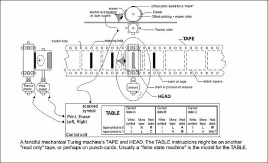

Acueil
Machine de Turing
Une machine de Turing est un modèle abstrait du fonctionnement des
appareils mécaniques de calcul, tel un ordinateur. Ce modèle a été imaginé
par Alan Turing en 1936, en vue de donner une définition précise au concept
d’algorithme ou de procédure mécanique. Ce modèle est toujours
largement utilisé en informatique théorique, en particulier pour résoudre les
problèmes de complexité algorithmique et de calculabilité, on lui adjoint
pour cela un oracle.
La machine de Turing est un objet abstrait composé de quatre éléments :
• Un ruban infini divisé en cases contenant chacune un symbole issu d'une liste finie.
• Une tête de lecture/écriture pouvant lire et écrire sur le ruban, et pouvant se déplacer vers la gauche ou la droite du ruban.
• Un registre d'état qui retient l'état actuel de la machine. Pour un être humain faisant du calcul mental, on pourrait comparer cela au fait de retenir l'état d'avancement du calcul.
• Une table d'actions qui lie symbole lu à une action à effectuer par la tête de lecture/écriture.
